מיתוג קוסמטיקה טבעית נכנס כמעט תמיד לאחת משתי עמודות: שדה פרחים עם “טבעי 100%”, או מעבדה לבנה עם “מוכח קלינית”. בשתיהן הלקוחה משווה אחוזים ומחיר. ELVÉA°, עולם מותג קונספט בדיוני שבניתי בסטודיו, מסרב לבחור צד: הטבע מתחיל את הסיפור, והפורמולה משלימה אותו. ההחלטה הזאת מצוירת כסמל של קו אחד, עלה וטיפה שנפגשים בנקודה שהיא העור של הלקוחה, והקו עובר בכל נקודת מגע: רצף הפתיחה באתר, התוויות (שאין עליהן שם מותג), החנות, השקיות וקמפיין ההשקה. בעמוד הזה: שש השכבות של העולם עם הנכסים האמיתיים שלו, טבלה של מה שנשאר קבוע, ומה זה אומר למותג הטיפוח הטבעי שלך.
הלקוחה והמקום
ELVÉA° הוא מותג שלא קיים. זה עולם מותג קונספט בדיוני: המייסדת, המוצרים והחנות הומצאו בסטודיו כדי לבדוק החלטה אחת עד הסוף. אבל ההחלטה עונה על שאלה אמיתית מאוד, שאני שומעת מיזמות של קווי טיפוח בוטניים: “הפורמולה שלי טבעית, אבל גם מדויקת. איך אני מראה את שני הדברים בלי שהמותג ייראה כמו כל מותג ירוק אחר?”
תחשבי על מדף של קוסמטיקה טבעית. פרח על התווית, עלה ירוק, קרטון ממוחזר, ומשפט על אחוז הרכיבים מהטבע. מולו, מדף של קוסמטיקה מדעית: בקבוק לבן, אחוזים של חומר פעיל, והמילה “קליני”. היזמת שבנינו לה את ELVÉA° נמצאת בדיוק באמצע. הרכיבים שלה באים מצמחים, והעבודה שלה היא לחבר אותם במינון מדויק. אם היא בוחרת בשדה הפרחים, היא מוותרת על הדיוק. אם היא בוחרת במעבדה, היא מוותרת על המקור. ובשני המקרים היא נכנסת לעמודה שיש בה כבר מאה מותגים.
הטבע מתחיל את הסיפור. הפורמולה משלימה אותו.
זו ההחלטה. שימי לב מה היא לא אומרת: היא לא אומרת “ירוק”, לא אומרת “טבעי” ולא מזכירה אף רכיב. היא אומרת מה המותג עושה שאחרים לא: מחבר. ומהרגע שזה ברור, כל שאלה עיצובית מקבלת תשובה מאותו מקום.
מה זה עולם מותג, דרך ELVÉA°
עולם מותג הוא לא לוגו ולא פלטה. הוא שכבת החלטה: סט חוקים קצר שקובע מה אף פעם לא משתנה, מה מותר לשנות, ואיזו טעות תשבור הכול. ב-ELVÉA° יש שלושה חוקים בלבד, והם כתובים גם בתחתית העמוד של העולם:
- מה אף פעם לא משתנה: הקו.עלה, טיפה, ונקודת המפגש ביניהם, שהיא העור. כל תוכן של המותג עובר דרך הקו הזה. בלי קו, זה לא ELVÉA°.
- מה מותר לשנות: כל השאר.המוצר, הרכיב, העונה, הצילום. סרום חדש עם רכיב אחר נכנס לעולם בלי לשנות אותו, כל עוד הקו מביא אותו אל העור.
- הטעות שהייתה שוברת את העולם: לבחור צד.ברגע שהמותג אומר “טבעי 100%” או “מוכח קלינית”, ההבטחה נשברת והוא חוזר לטבלת ההשוואה.
שלושה חוקים. עכשיו נראה איך הם מחזיקים שש נקודות מגע שונות לגמרי, מהגלילה הראשונה באתר ועד השקית שהלקוחה לוקחת הביתה.
שכבה 1: La Rencontre, המפגש
העולם נפתח בפרח לבן שתלוי באוויר על רקע שמנת. אין לוגו, אין מבצע. ואז הגלילה מתחילה לעבוד: עלה וטיפות מתקרבים לפרח, שלושתם נבלעים בתוך טיפה אחת גדולה, הטיפה נמתחת לזרם, הזרם נמזג לבקבוק, והבקבוק מקבל תווית. מה שנראה כמו סרטון הוא בעצם שמונים פריימים מתוך וידאו אחד רציף, והאצבע של הלקוחה מנגנת אותם. גוללת לאט, הפורמולה נוצרת לאט.
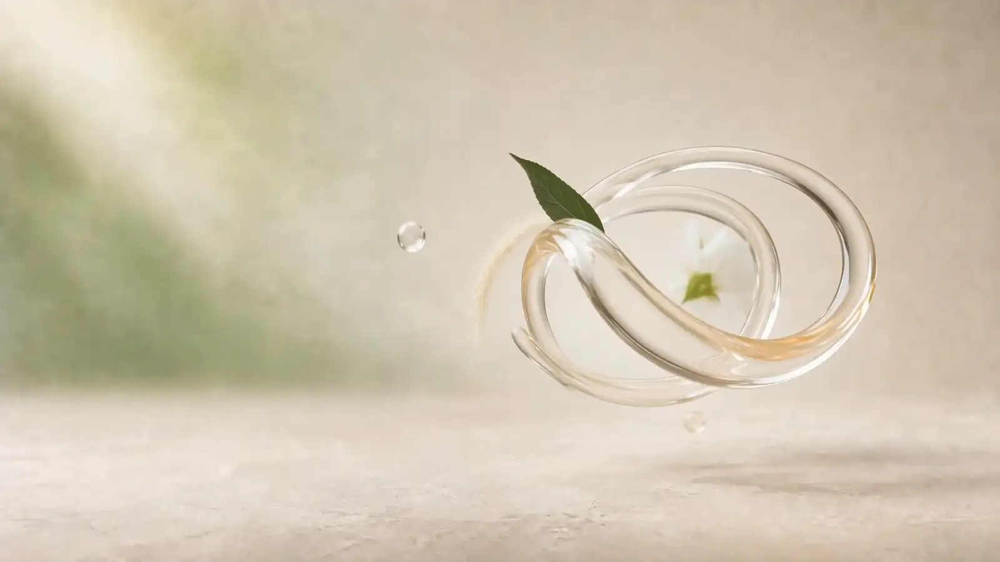
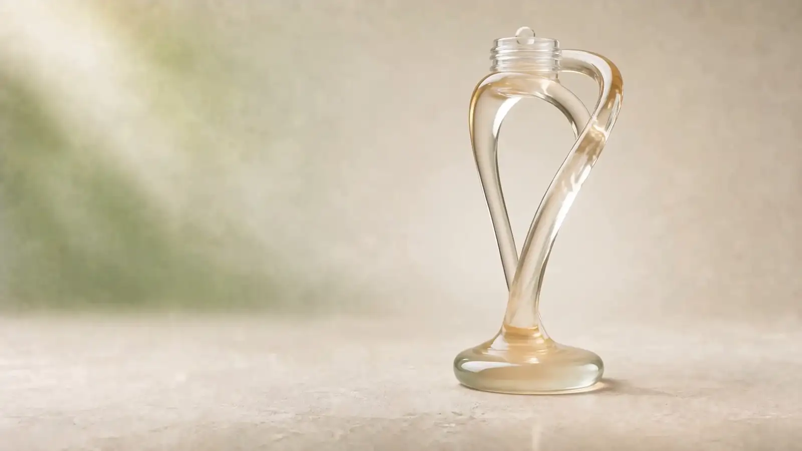
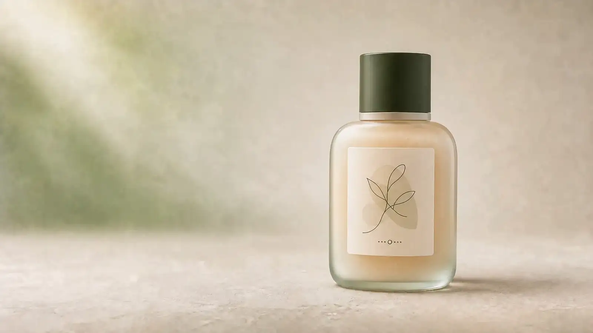
La Rencontre · The Opening. פרח, מפגש, זרם, בקבוק. שמונים פריימים, גלילה אחת.
והטקסט רוכב על אותה גלילה, שורה לכל תחנה: “בטבע, שום דבר לא פועל לבד.” ואחר כך “מהצמח אל הפורמולה”, “הפורמולה מקבלת צורה”, “מהפורמולה אל העור”. הלקוחה לא קוראת הסבר על התהליך. היא עוברת אותו בעצמה, בקצב שלה. וזה ההבדל בין מותג שאומר “טבע ומדע” לבין מותג שמראה איך הם נפגשים.
מה נשאר קבועהפרח הלבן, הירוק העדין ברקע, וטיפה אחת שבה הכול נפגש.
שכבה 2: Le Symbole, שני קווים ונקודת מפגש אחת
כאן ההחלטה מקבלת צורה שאפשר להדפיס. הסמל של ELVÉA° הוא לא איור של ענף. הוא כל תפיסת המותג, מצוירת בקו אחד: הקו הראשון הוא עלה, המקור הבוטני. הקו השני הוא טיפה, הפורמולה המדויקת. והנקודה שבה הם נוגעים זה בזה היא העור שלך.
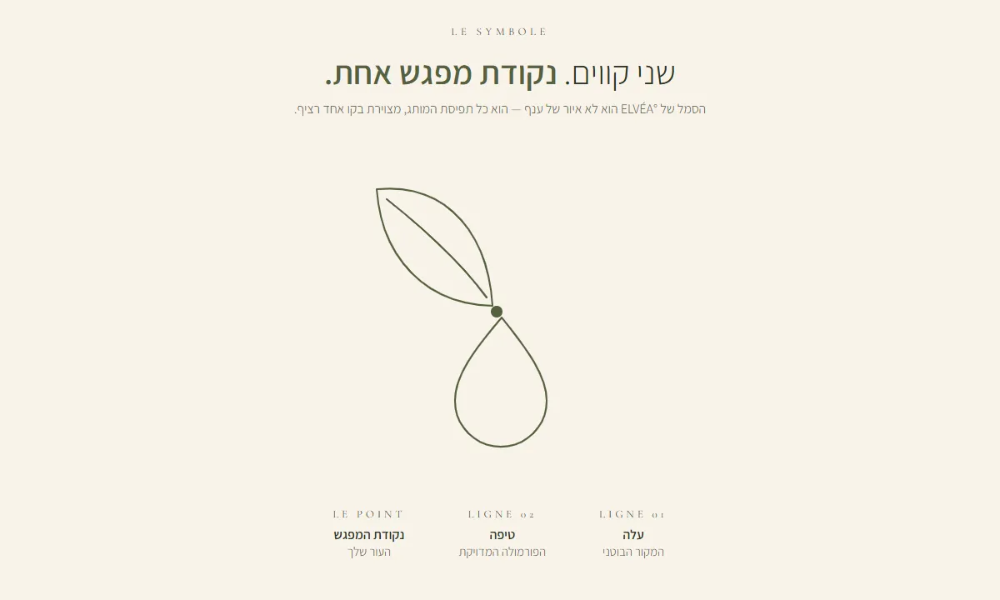
למה זה חשוב לקו טיפוח טבעי? כי רוב הסמלים בקטגוריה הם תיאור של המוצר: עלה, כי יש בו צמחים. הסמל של ELVÉA° הוא טענה: שבמותג הזה טבע ומדע לא מתחרים, הם נפגשים. ומי שהבינה את הסמל פעם אחת קוראת אותו מעכשיו בכל מקום, גם כשאין לידו מילה.
מה נשאר קבועשני קווים, נקודה אחת, ירוק זית על שמנת.
שכבה 3: La Collection, לא עשרה שלבים
הכותרת של הקולקציה היא בעצמה החלטה: “לא עשרה שלבים. כמה מוצרים שסומכים עליהם.” ELVÉA° יוצא עם שלושה מוצרים בלבד. Le Sérum, סרום בוטני מרוכז, “המפגש עצמו, בבקבוק”. La Crème, קרם יום־ולילה שעוטף את הסרום. ו-Le Coffret, הסט שמחבר ביניהם לטקס יומיומי אחד.
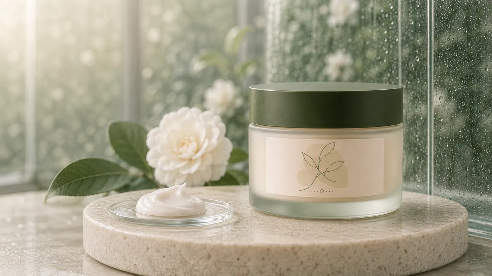

Le Sérum, La Crème, Le Coffret. שלושה מוצרים, ועל כולם אותו קו.
ועכשיו תסתכלי שוב על התוויות. אין עליהן שם מותג. לא ELVÉA°, לא שם המוצר, לא אחוזים. רק הקו, ומתחתיו סימן קטן. זו לא שכחה, זה המבחן של העולם כולו: אם מסתירים את הלוגו, האם עדיין מזהים את המותג? כשהסמל נושא את ההחלטה, התשובה היא כן. וכמות המוצרים היא חלק מאותה החלטה. מותג שמבטיח “חיבורים מדויקים” לא יכול לצאת עם שתים־עשרה שלבים. כמה מוצרים להשיק זו אחת משבע ההחלטות לפני האריזה, ולא רק שאלה של מלאי.
מה נשאר קבועהקו על כל תווית, הפקק הירוק, הזכוכית החלבית, והמספר הקטן של המוצרים.
שכבה 4: La Boutique, הקו על הקיר
“עולם שלם, באותו קו ובאותם צבעים.” החנות של ELVÉA° היא חדר של שמנת ואבן, עם נישות קשת בירוק זית, דלפק מעוגל שנראה כמו המשך של האבנים מהצילומים, ועל הקיר המרכזי: הסמל, בגודל של אדם. הלקוחה שגללה באתר נכנסת לחנות ופוגשת את אותו קו. אחר כך הוא על הקופסה שהיא קונה, ואחר כך על השקית שהיא לוקחת ברחוב.
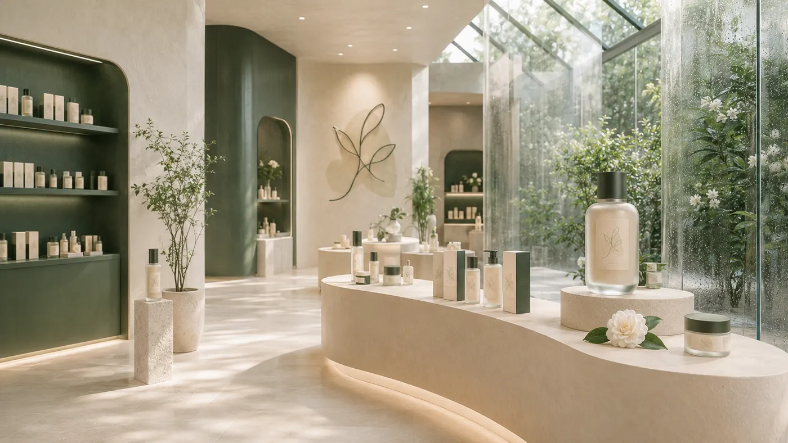
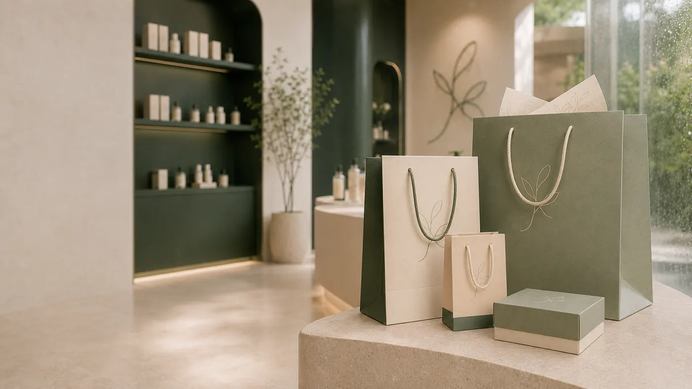
La Boutique. הקיר, הקופסה והשקית. אותו קו בשלושה קני מידה.
למה מותג שמוכר בעיקר אונליין צריך לחשוב על חנות? כי החנות היא מבחן לחץ לשפה. אם הסמל עובד על קיר של שלושה מטרים וגם על תווית של שלושה סנטימטרים, הוא יעבוד גם בדוכן ביריד, בקופסת משלוח ובסטורי. ואם הוא עובד רק במסך, הוא עוד לא סמל. הוא איור.
מה נשאר קבועהסמל, ירוק הזית, האבן והשמנת. מה שמשתנה הוא רק הגודל.
שכבה 5: La Femme ELVÉA, הפרסונה כמסננת
“אם המותג היה אישה.” מתחת לכותרת הזאת יש שש שורות: רגועה, אבל לא שקטה מדי. מטופחת בלי להיראות מתאמצת. מחוברת לטבע, ומאמינה במדע. קוראת לפני שהיא קונה. אוהבת עיצוב, איכות ופשטות. ולא מחפשת עשרה שלבים, אלא כמה מוצרים שהיא סומכת עליהם.
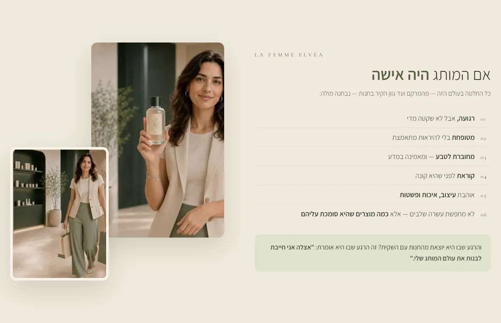
שימי לב לשורה השלישית: זו אותה ההחלטה של המותג, הפעם כתכונה של הלקוחה. והשורה האחרונה היא הסיבה שהקולקציה קטנה. כך פרסונה עובדת כשהיא חלק מעולם ולא שקופית במצגת: היא לא מתארת קהל יעד, היא מסננת החלטות. גוון הקיר בחנות, המרקם של הקרם, מספר המוצרים: כל אחד מהם נבדק מול השאלה “האם היא הייתה בוחרת בזה?”
מה נשאר קבועשש השורות. מוצר חדש שלא עובר אותן לא נכנס.
שכבה 6: Le Fil Vert, קמפיין שמצויר על אותו קו
וזה החלק שבו רוב מותגי הטיפוח מתפזרים: הסושיאל. הפוסט נעשה בכלי אחד, הסטורי בטלפון, והקמפיין אצל מישהי אחרת. ב-ELVÉA° קמפיין ההשקה באינסטגרם הוא קרוסלה של חמישה שקפים שמצוירת כולה על הקו מהסמל. הקו יוצא מהיד שלה, עובר דרך המרכיבים, נכנס אל הפורמולה, נמתח לאורך הדלפק שעליו עומדת הקולקציה, וחוזר אל היד שלה, הפעם עם המוצר.
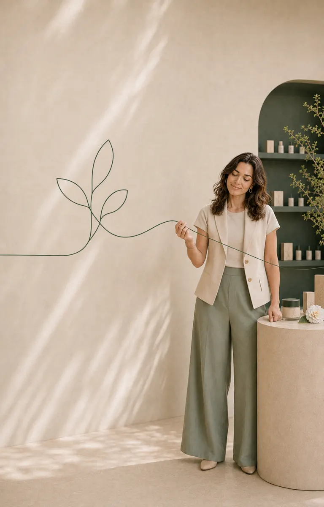
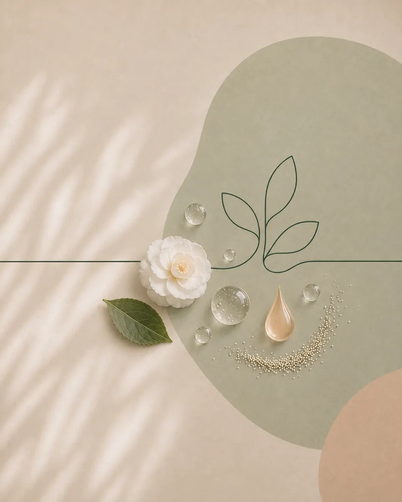
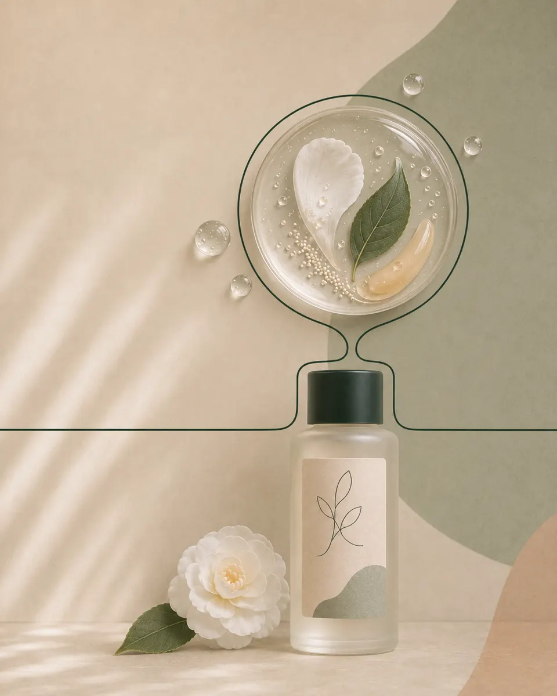
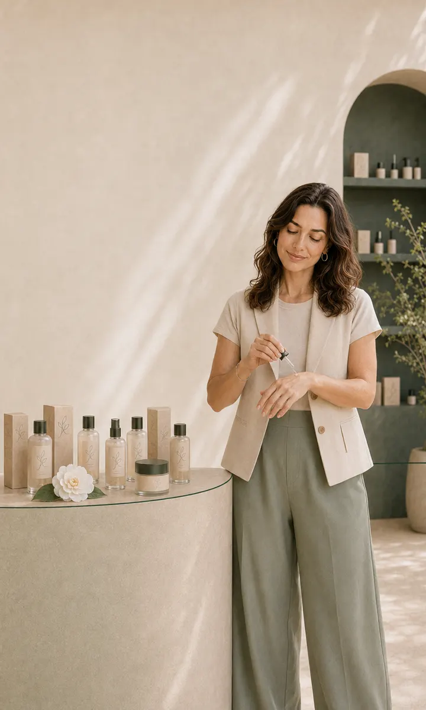
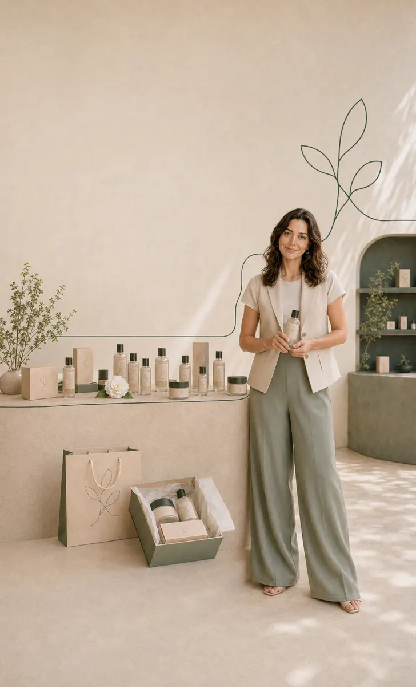
ובאתר הקרוסלה לא הוטמעה כגלריה. השקפים נפרשים לרוחב בגלילה, ומדדנו את הגובה המדויק שבו הקו פוגש את השוליים של כל תמונה, כדי שקווי חיבור שמצוירים בזמן אמת ימשיכו אותו משקף לשקף. הקו לא נשבר, לא בין שקף לשקף, ולא בין האתר לקמפיין.
ההשלכה למותג אמיתי: כשיש קו, תוכן הוא נגזרת ולא פרויקט. פוסט על רכיב חדש? הקו עובר דרכו. סטורי מהחנות? הקו על הקיר. אף פוסט לא צריך להמציא את עצמו מחדש, ומי שעקבה אחרי הקו פעם אחת מזהה אותו בפוסט הבא עוד לפני שקראה את שם המותג.
מה נשאר קבועהקו. הוא עובר מהסמל לקמפיין בלי לשנות עובי.
שש נקודות מגע, טבלה אחת
| נקודת מגע | מה היא עושה | מה נשאר קבוע |
|---|---|---|
| La Rencontre | מראה את המפגש בין טבע לפורמולה, בקצב של הלקוחה | הפרח, הטיפה, הגלילה |
| Le Symbole | הופך את ההחלטה לסימן שאפשר להדפיס | שני קווים, נקודה אחת |
| La Collection | מוכיחה “חיבורים מדויקים” דרך מעט מוצרים | הקו על התווית, בלי שם |
| La Boutique | בודקת שהשפה עובדת בכל קנה מידה | הסמל על הקיר, הקופסה והשקית |
| La Femme ELVÉA | מסננת כל החלטה חדשה | שש שורות |
| Le Fil Vert | מפיץ את העולם בפיד | הקו, משקף לשקף |
קראי את העמודה האחרונה מלמעלה למטה. זו ההגדרה הכי פשוטה שיש לי לעולם מותג: רשימת הדברים שלא משתנים כשעוברים מנקודת מגע לנקודת מגע. ב-ROSÉE°, העולם הקודם בסדרה, הדבר שלא משתנה היה שעה. ב-ELVÉA° הוא קו. ובשניהם הוא לא צבע ולא לוגו.
מה זה אומר למותג הקוסמטיקה הטבעית שלך
ELVÉA° בדיוני, אבל הבעיה שהוא פותר אמיתית. “טבעי” היא תכונה של קטגוריה שלמה, לא הבטחה של מותג אחד. כשכל המותגים על המדף מציגים פרח, עלה ואחוז רכיבים מהטבע, ללקוחה נשאר רק מה להשוות: כמה אחוז, כמה מ״ל, כמה שקלים. זה בדיוק המצב ששבעת הסימנים של טבלת ההשוואה מתארים. והפורמולה שלך יכולה להיות הטובה בטבלה ועדיין להיות בטבלה.
אי אפשר להשוות מפגש בין טבע למדע לאחוז של רכיב פעיל.
אז מה עושים עם זה מחר בבוקר? שלוש שאלות, אותן אני שואלת בשיחות אבחון עם בעלות קווי טיפוח טבעיים:
- מה המותג שלך מחבר? לא מה יש בו, אלא בין מה למה. אצל ELVÉA° זה טבע ומדע. אצלך אולי מסורת וחדשנות, או החדר שלך והבית שלה.
- האם הסמל שלך מתאר או טוען? עלה שמספר שיש צמחים הוא תיאור. קו שמראה איפה שני דברים נפגשים הוא טענה, ואת הטענה המתחרות לא יכולות להעתיק בלי להעתיק את כל המותג.
- תסתירי את הלוגו. שימי זו ליד זו את התווית, הדף באתר והפוסט האחרון, ותכסי את השם. אם עדיין רואים שזה אותו מותג, יש לך קו. אם לא, יש לך שלושה עיצובים.
הרקע המלא, כולל ההבדל בין מותג פרטי, ליין ומותג טיפוח, נמצא במדריך מיתוג קוסמטיקה וטיפוח. וההבדל בין מוצר שנמכר במחיר שלו לבין מוצר שנמכר בשפה שלו מוסבר במאמר על אותו מוצר במחיר אחר.
איך זה נבנה
בקצרה, כי יש על זה מאמר שלם. ההחלטה נכתבה קודם, במשפט אחד ובשלושה חוקים. ממנה נגזר הסמל, ומהסמל מערכת תמונה אחת: ירוק זית, שמנת, אבן, זכוכית חלבית ופרח לבן. רצף הפתיחה נוצר כווידאו AI רציף אחד, מהפרח הבודד ועד הבקבוק, ופורק לשמונים פריימים שהגלילה מנגנת על קנבס. תצלומי המוצר, החנות והפרסונה נוצרו באותה מערכת תמונה, כדי שהקו ייראה זהה על כל תווית. הקוד תפר הכול, כולל הסמל שמצויר בקו חי והקרוסלה שנפרשת לרוחב. הסדר הזה, DNA לפני כלים, הוא אותו סדר בכל עולם.
עולמות שכנים
ELVÉA° הוא הפרק הרביעי בסדרת “סיפורי עולמות”. שלושת הפרקים הקודמים פירקו מותג סרום, בוטיק שוקולד ובית מקרונים, ועוד שני עולמות ביוטי מהסטודיו קרובים ברוח ושונים בסיפור:
שאלות נפוצות על מיתוג קוסמטיקה טבעית
מה זה מיתוג קוסמטיקה טבעית בגישת עולם מותג?
מיתוג שמתחיל מהחלטה ולא מהמילה “טבעי”. ב-ELVÉA° ההחלטה היא לא לבחור בין טבע למדע. ממנה נגזר סמל של קו אחד, עלה וטיפה שנפגשים על העור, והקו עובר ברצף הפתיחה, בתוויות, בקופסה, בחנות, בשקיות ובקמפיין ההשקה.
למה המילה “טבעי” לא מספיקה כדי למתג קו טיפוח?
כי היא תכונה של הקטגוריה כולה. כשכל המותגים מציגים פרח ואחוז רכיבים מהטבע, הלקוחה משווה מחיר ואחוזים. מותג יוצא מההשוואה כשיש לו משהו שאי אפשר לשים בעמודה של טבלה.
למה על התוויות של ELVÉA° אין שם מותג?
כי הסמל עושה את העבודה. על הבקבוק, הצנצנת והקופסה יש רק את הקו. זה המבחן שכל מותג יכול לעשות: אם מסתירים את הלוגו, האם עדיין מזהים אותו?
איך נבנה עולם המותג של ELVÉA°?
החלטה אחת, סמל שמצייר אותה, מערכת תמונה אחת, וידאו AI רציף שפורק לפריימים שהגלילה מנגנת, וקוד שתופר הכול. ELVÉA° הוא עולם מותג קונספט בדיוני של הסטודיו, לא מותג מסחרי.
כמה מוצרים צריך מותג טיפוח טבעי בהשקה?
פחות ממה שנדמה. ELVÉA° יוצא עם שלושה, כי הפרסונה שלו לא מחפשת עשרה שלבים. מספר המוצרים הוא החלטת מותג, ושבע ההחלטות שצריך לסגור לפני ההשקה מפורטות במאמר על השקת מותג טיפוח.
ELVÉA° הוא הפרק הרביעי בסדרת “סיפורי עולמות”: בכל פרק אני לוקחת עולם אחד מהארכיון ומפרקת אותו לשכבות, עם הנכסים האמיתיים שלו בעמוד. הפריימים, הסמל, התצלומים ושקפי הקרוסלה כאן הם אותם קבצים שמריצים את העולם עצמו. הסיבה שבחרתי בו עכשיו היא התוויות: עולם שבו אין שם על הבקבוק, ובכל זאת מזהים אותו, הוא התשובה הכי ישירה שיש לי לשאלה “מה זה עולם מותג”.
מה הקו של המותג שלך?
באבחון פער המותג, 30 דקות ובלי עלות, נשים את התווית, האתר והפוסטים על שולחן אחד, נסתיר את הלוגו, ונראה מה עוד מחזיק את המותג. כתבי לי “קו” בוואטסאפ ונתחיל משם.
לאבחון פער המותג ←